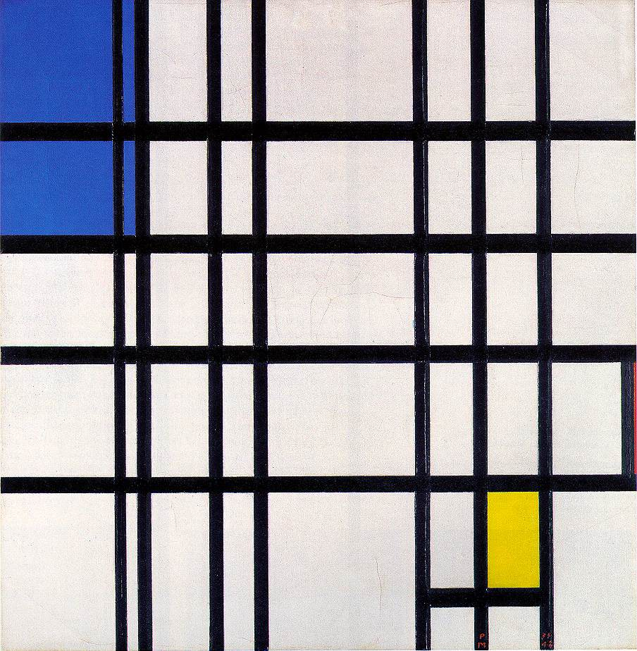
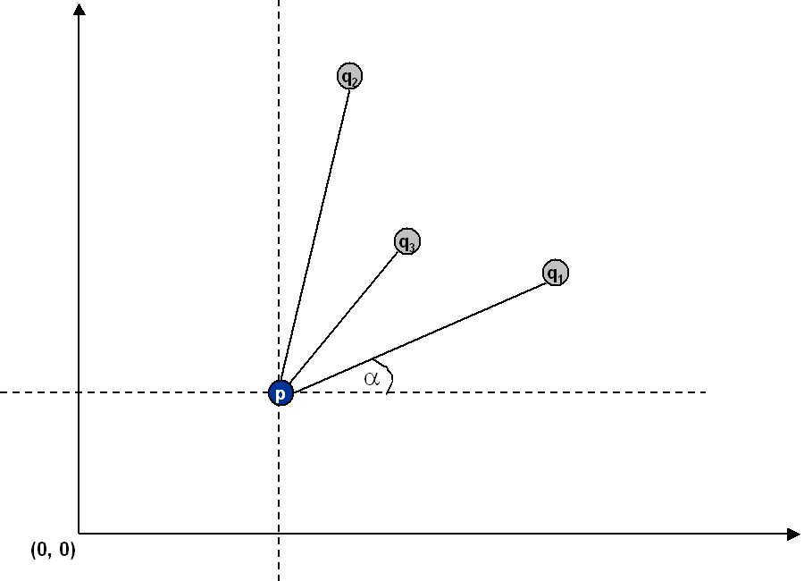

|  |
Project 4 : Pattern Recognition
Assigned : Apr 12
Due : Apr 26
|
|
|
|
Quick Links
- Marking Scheme (updated Mar 30)
- Sample executable: Fast,
Brute, PointPlotter
(courtesy of Jiang Yuxiang; only runs in linux! Updated June 21)
- Sample inputs:
input6.txt,
input8.txt (usage: PointPlotter input6.txt)
Project Description
This programming assignment is adopted from an assignment of a similar course offered at Princeton and
is gratefully acknowledged.
Write a program to recognize line patterns in a given set of points.
Computer vision involves analyzing patterns in visual images and
reconstructing the real world objects that produced them. The process
is often broken up into two phases: feature detection and
pattern recognition. Feature detection involves selecting
important features of the image; pattern recognition involves
discovering patterns in the features. We will investigate a
particularly clean pattern recognition problem involving points and
line segments. This kind of pattern recognition arises in many other
applications, for example statistical data analysis.
You will design and implement an ADT Point, and a client program
PointPlotter to help you develop this assignment. The plotting
facility can be implemented using QT which you have been using. The program
reads in a list of points from standard input and plots them. You will need
to supply additional methods in Point in order to support the
brute force client, e.g., checking whether three or four points lie on
the same line. The details are as follows:
The problem.
Given a set of N points in the plane,
draw every line segment that connects 4 or more distinct points in the set.

Brute force.
Write a program Brute that examines 4
points at a time and checks if
they all lie on the same line segment, printing out any such line
segments to standard output and plotting them.
A sorting solution.
Remarkably, it is possible to solve the problem much faster than the
brute force solution described above.
Given a point p, the following method determines whether p
participates in a set of 4 or more collinear points.
- Think of p as the origin.
- For each other point q, determine the angle it makes with p.
- Sort the points according to the angle each makes with p.
- Check if any 3 (or more) adjacent points in the sorted order have equal
angles with p.
If so, these points, together with p, are collinear.
Applying this method for each of the N points in turn yields an
efficient algorithm to the problem.
The algorithm solves the problem because points that make the same angle with
p are collinear, and sorting brings such points together.
The algorithm is fast because the bottleneck operation is sorting.

Write a program Fast that implements this algorithm using
sort() on arrays, and a user-defined Comparator
for Point objects. Operator overloading should be used
when you implement Comparator.
Input format.
The data file consists of an integer N, followed by N
pairs of integers (x, y) between 0 and 32,767.
% more input6.txt % more input8.txt
6 8
19000 10000 10000 0
18000 10000 0 10000
32000 10000 3000 7000
21000 10000 7000 3000
1234 5678 20000 21000
14000 10000 3000 4000
14000 15000
6000 7000
Output format.
Print to standard output the line segments that your program discovers
in the format below (number of collinear points in the line segment, followed by the points).
% Brute < input8.txt
4: (10000, 0) -> (7000, 3000) -> (3000, 7000) -> (0, 10000)
4: (3000, 4000) -> (6000, 7000) -> (14000, 15000) -> (20000, 21000)
% Fast < input6.txt
5: (14000, 10000) -> (18000, 10000) -> (19000, 10000) -> (21000, 10000) -> (32000, 10000)
In the sample executable, the QT GUI provides an integrated environment
for user to choose which algorithm (Brute or Fast). Then,
the program outputs the line sequences in standard output, plots
the lines (PointPlotter) and reports the running time.
You are suggested to implement this project in a similar way.
Plot the points and the line segments using your PointPlotter utility.
Using the Point data type supplied,
p.draw() draws the point p and
p.drawTo(q) draws the line segment from p to q.
Before drawing, you may need to scale the coordinate system so that coordinates
between 0 and 32,767 fit in the graphics window.
For full credit, Fast must print and plot a
minimal representation: that is, only print one representation of each
line segment and don't print subsegments.
It's ok if Brute does not produce a minimal representation.
Analysis.
Estimate (using tilde notation) the running time (in seconds) of your
two programs as a function of the number of points N.
Provide empirical and mathematical evidence to justify your hypotheses.
Deliverables.
Submit the files: Brute,
Fast, Point, PointPlotter. You must include
the Makefile so that the grading TA can rebuild your program.
Also submit any other auxiliary files, if any, that your program needs
(excluding our standard libraries).
Finally, submit a
readme.txt file and answer the questions.
What to submit
- All the source code (.cpp and .h), but not the object code or
executable
- Makefile and readme.txt
- Zip (1) and (2) inside a file called patterns.zip, and upload
the file to CASS before 23:59:00 on the due date.
Warning: If your submitted project fails to compile,
your assignment will be treated as late (where late policy applies).
 |